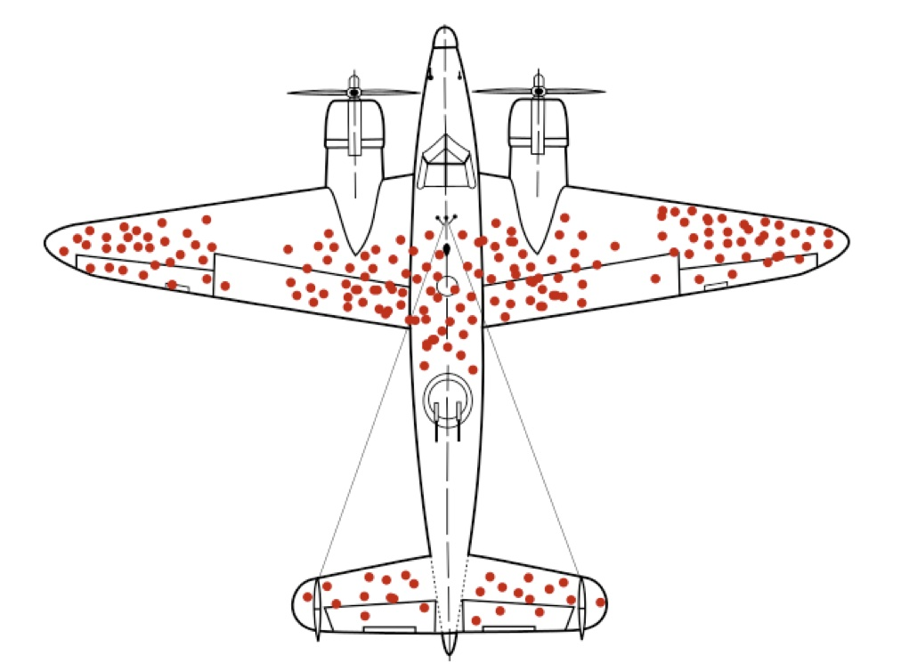
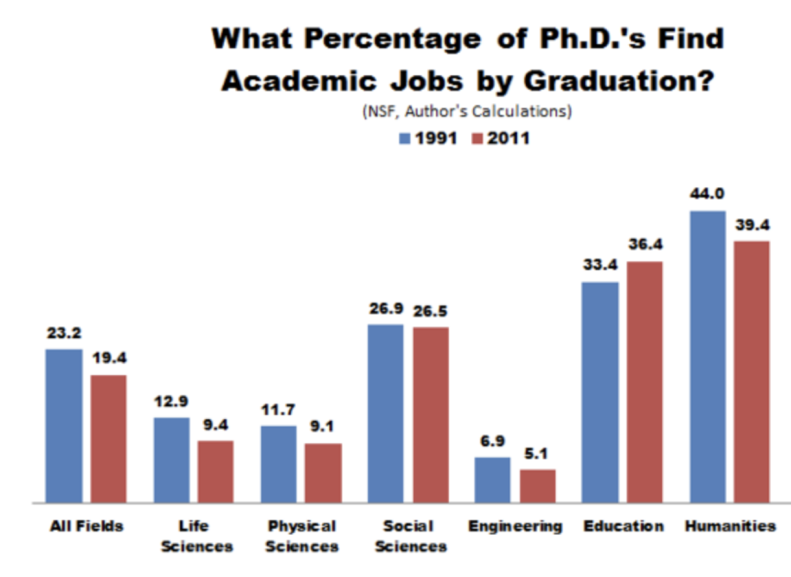
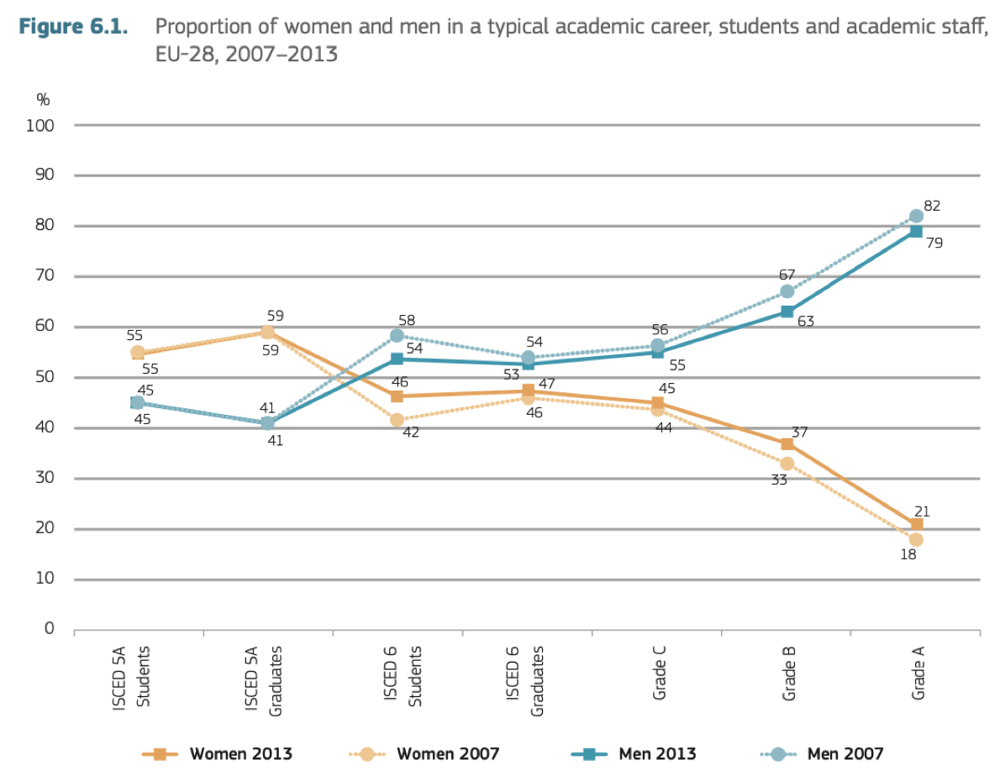
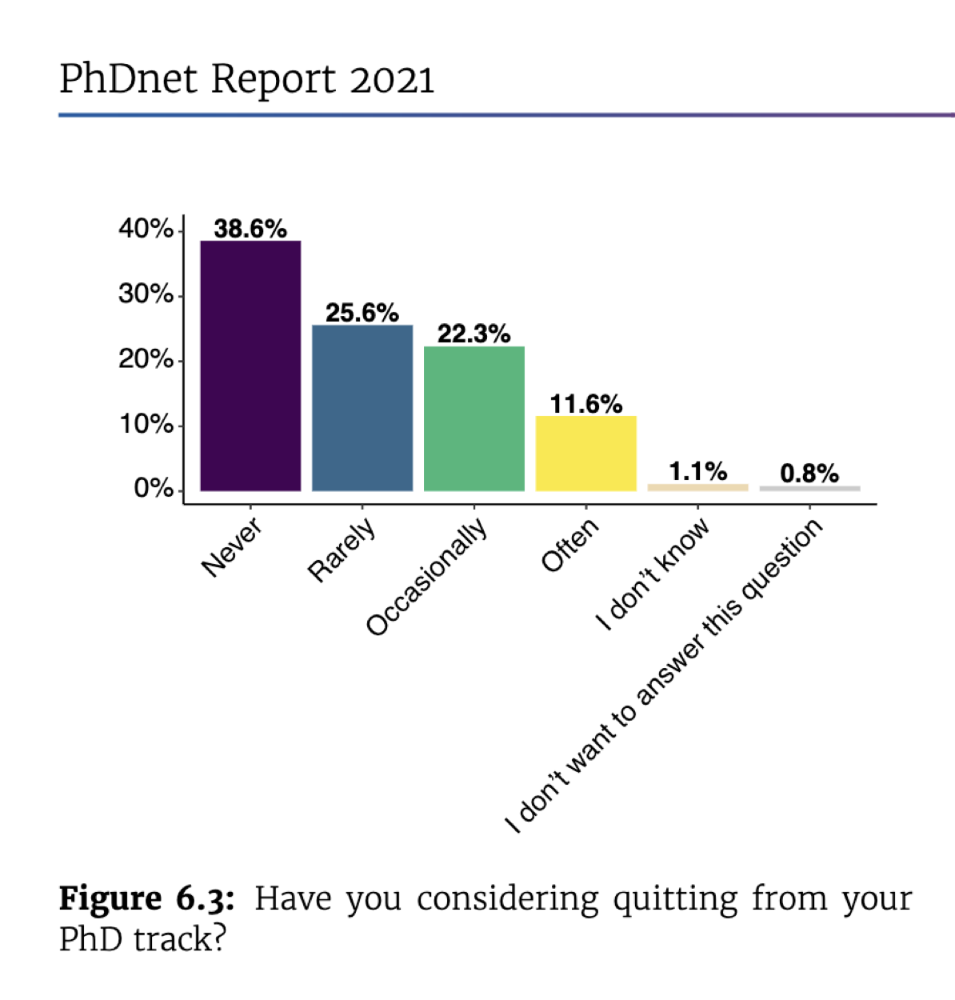
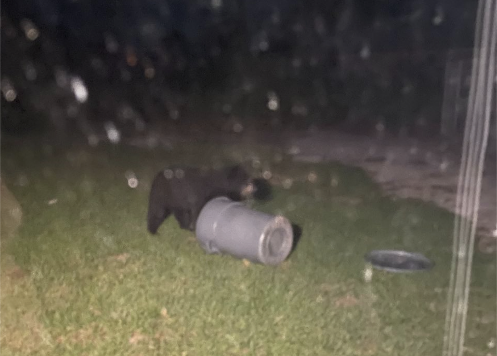
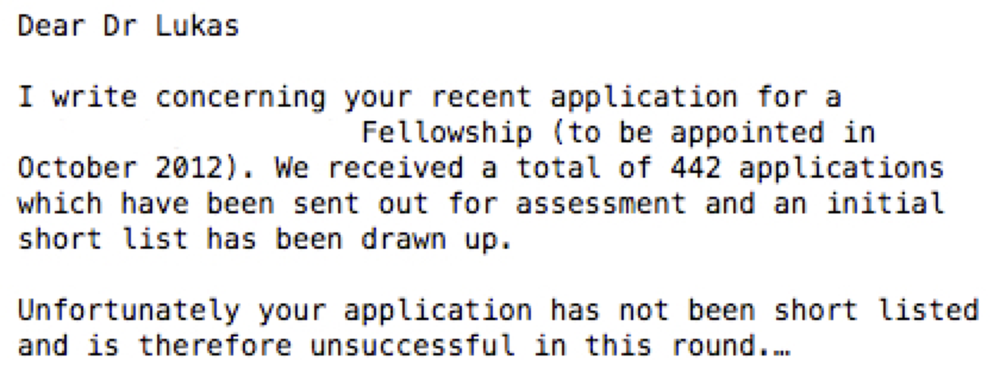
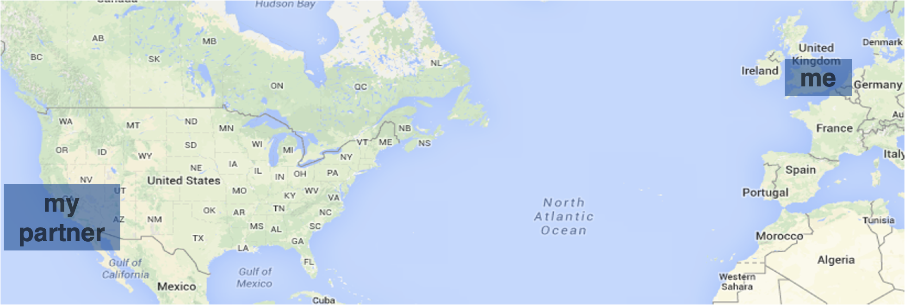
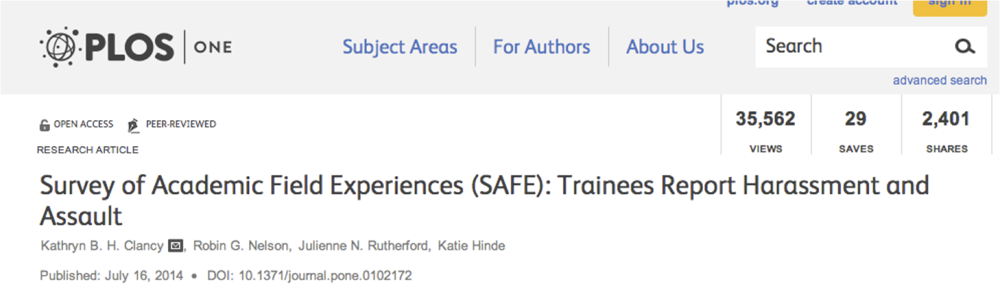
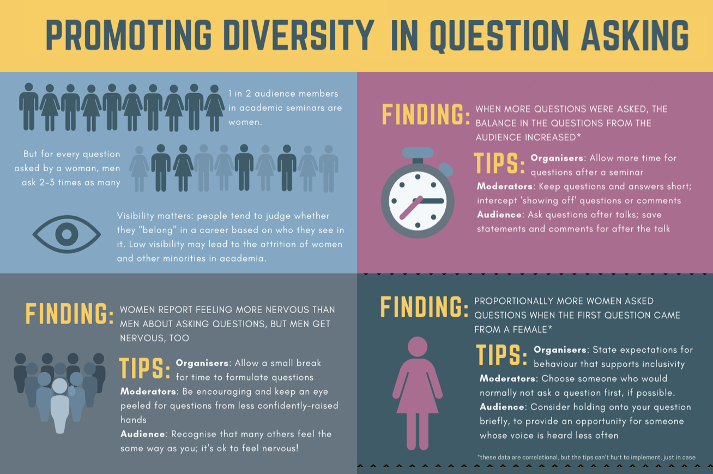
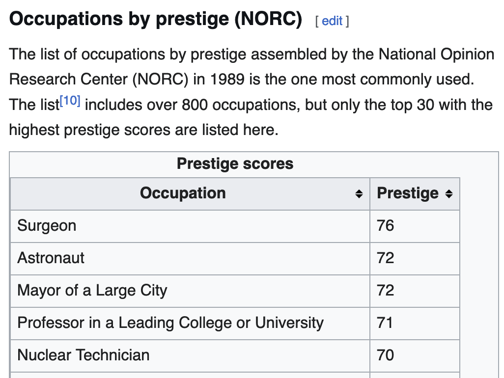

|  | First, it is important to point out that all my advice below (and the expert advice you will hear from people on the inside) comes from a position of ‘survivorship bias’. We did not personally experience the negative parts that would have killed our academic career. Consider also talking to people who took other paths: it can help to bring perspective on the academic environment, and it might also show you career options you did not know existed. |
{kind=link}
Image credit: Wikipedia, Martin Grandjean (vector), McGeddon (picture), Cameron Moll (concept)
|  | Talking about survivorship, only about 20% of PhD graduates climb the pyramid to the level of professor. Of course, not everyone who pursues a PhD wants to pursue an academic career. Still, many who might want this career end up outside of academia. |
Image credit: The Atlantic, Jordan Weissmann
|  | My academic career has benefited from privileges. Gender, social background, race, etc. are all still linked to the probability of climbing through academic ranks. For example, the graphic on the left shows the gender biases across Europe in 2013. While more women (yellow line) start at university, by the time of the PhD (ISCEC 6 Graduates), there are more men (blue line). The scissor pattern expands more dramatically for the final, professorship positions, where 79% are men. |
Image credit: European Commission, She Figures 2015
|  | You can experience lots of frustration in an academic career. For example, in a sample of Max Planck graduate students, more than 60% of respondents said that they have considered quitting pursuing a PhD. |
What are some of the potential negatives to consider when pursuing an academic career?
Things will go wrong: Research is about exploring unknowns. That often means that projects will not work as you might envision them. The photo on the right shows an example: during a field work project, a bear showed up in the area, so we had to change the whole setup. That’s extreme, but there are lots of moments where you will feel frustrated. Research often involves doing things that no one has done before, so you cannot predict how they will turn out. |
 |
Negative feedback: During the steps of your academic career, you and your work will constantly be evaluated. The pyramidal structure means that there is competition over opportunities, with limited funding and positions (see letter on the right), and in the current publication system, your manuscripts might get rejected by editors and reviewers. The process is often not visible and can be and feel unfair, because evaluations of the abstract concept of scientific excellence risks being undermined by biases. In turn, rewards are often delayed. Everyone has different strategies to find the motivation to keep going forward. |
 |
Instability: It can take many years until you have that final, permanent position. There is an expectation that academics should move for their jobs, and supposedly experience academic systems in different countries. While that can be exciting and an opportunity, it can also make it difficult to arrange your life outside of work. The image illustrates that for a couple of years my partners and I lived several thousands of kilometers apart. |
 |
Risks: Academic jobs involve regular interactions among people in a diversity of settings. These can carry a risk of unwelcome and unethical approaches, including various forms of harassment and breach of boundaries. Risks of exploitation are high in a hierarchical system like academia. None of this should occur, and more and more dedicated individuals are taking active steps to root out such behaviour (the image on the right shows an example). However, it currently sadly still is part of the reality of many individuals. |
 |
What are some of the potential positives to consider when pursuing an academic career?
Freedom: Once you have reached a certain level of independence, you can chart your own research agenda (provided you have the funding for it). This is different to, for example, research in companies, which is more tightly aligned to specific goals and expectations. The academic freedom means you can also start side projects, like the one depicted on the right I had the opportunity to be involved in. |
 |
Chance to have unique experiences: Some of the points listed above as negatives might actually appeal to you. It can be enriching to experience different cultures and meet new people. Unforeseen experiences can provide opportunities to explore something new. |
|
Potential to impact people: My impression is that many people seek out academic careers because they are curious about the world, and because they want to make a contribution - either in practical terms or more general by increasing what we know about the world. |
|
Potentially stable, prestigious, decent paid job: People think very highly of permanent academics. The image on the right shows that professors are in the top 5 of occupational prestige. Besides the impression of the contribution that professors can make (see point above), this prestige is also reflected in decent pay, relative job stability, and being in a leadership position with the freedom to chart your own path. |
 |